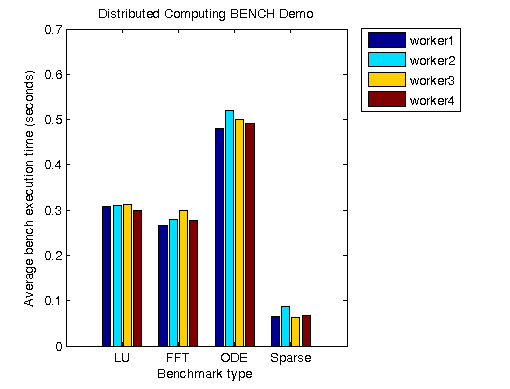

Distributed Benchmark
This demonstration runs a MATLAB® benchmark that has been modified for Parallel Computing Toolbox™. We execute the benchmark on our workers to determine the relative speeds of the machines on our distributed computing network. Fluctuations of 5 or 10 percent in the measured times of repeated runs on a single machine are not uncommon.
This benchmark is intended to compare the performance of one particular version of MATLAB on different machines. It does not offer direct comparisons between different versions of MATLAB. The tasks and problem sizes change from version to version.
For details about the benchmark, view the code for pctdemo_task_bench.
Prerequisites:
Related demos:
Contents
Load the Demo Settings and the Data
The demo uses the default configuration when identifying the scheduler to use. The configurations documentation explains how to create new configurations and how to change the default configuration. See Customizing the Settings for the Demos in the Parallel Computing Toolbox for instructions on how to change the demo difficulty level or the number of tasks created.
Because this demo uses callbacks, we also verify that we have a job manager object to use, rather than one of the other scheduler types.
[difficulty, manager, numTasks] = pctdemo_helper_getDefaults(); if ~isa(manager, 'distcomp.jobmanager') error('distcomp:demo:NotJobmanager', ... ['This demo uses callbacks, which are only available with ' ... 'a job manager.']); end fprintf(['This demo will submit a job with %d task(s) ' ... 'to the scheduler.\n'], numTasks);
This demo will submit a job with 4 task(s) to the scheduler.
We will repeat the benchmark count times, and run a total of numTasks benchmarks on the network. Because we cannot control which workers execute the tasks, some of them may be benchmarked more than once. Also, note that the demo difficulty level has no effect on the computations we perform in this demo. You can view the code for pctdemo_setup_bench for full details.
[fig, count] = pctdemo_setup_bench(difficulty);
Create and Submit the Job
We create one job that consists of numTasks tasks. Each task consists of executing pctdemo_task_bench(count) and calling pctdemo_taskfin_bench when it has completed. The task finished callback collects the task results and stores them. It also updates the plot with all the results obtained so far. You can view the code for pctdemo_task_bench and pctdemo_taskfin_bench for the details.
job = createJob(manager); for i = 1:numTasks task = createTask(job, @pctdemo_task_bench, 1, {count}); set(task, 'FinishedFcn', @pctdemo_taskfin_bench, ... 'UserData', fig); end
We can now submit the job and wait for it to finish.
submit(job);
waitForState(job, 'finished');
 Retrieve the Results
As the tasks finish, the task finished callback function collects the task results and updates the output figure. Therefore, we do not need to perform any plotting here, and we simply verify that we obtained all the results we were expecting. We throw an error if we could not obtain any results, but display a warning if we got only some of the results.
jobResults = getAllOutputArguments(job); if isempty(jobResults) taskErrorMsgs = pctdemo_helper_getUniqueErrors(job); destroy(job); error('distcomp:demo:EmptyJobOutput', ... ['Could not obtain any job results. The following error(s) ' ... 'occurred \nduring task execution:\n\n%s'], ... taskErrorMsgs); end
We verify that all the tasks completed successfully.
numOk = nnz(~cellfun('isempty', jobResults)); if ~(numOk == numTasks) taskErrorMsgs = pctdemo_helper_getUniqueErrors(job); warning('distcomp:demo:IncompleteJobResults', ... ['Some tasks did not finish. Only %d out of %d benchmarks' ... 'were completed. \nThe following error(s) ' ... 'occurred during task execution:\n\n%s'], ... numOk, numTasks, taskErrorMsgs); end
We have now finished all the verifications, so we can destroy the job.
destroy(job);